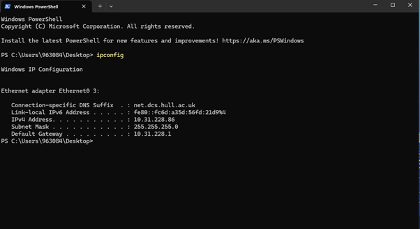
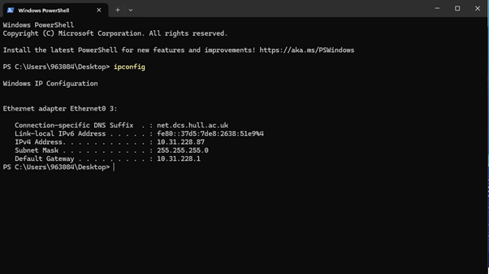
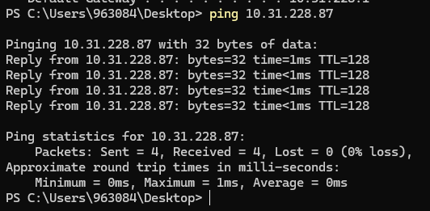
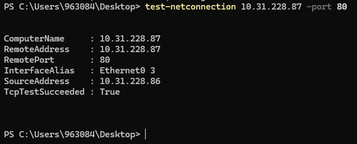
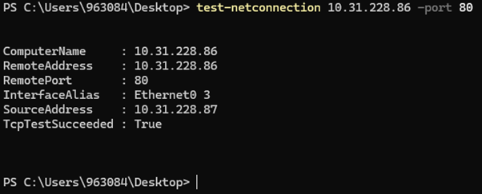
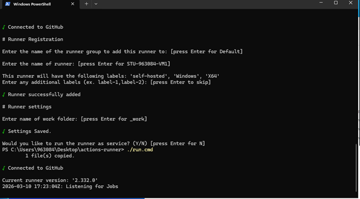
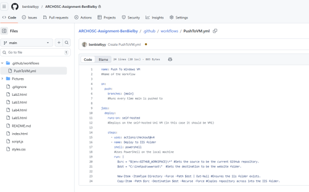
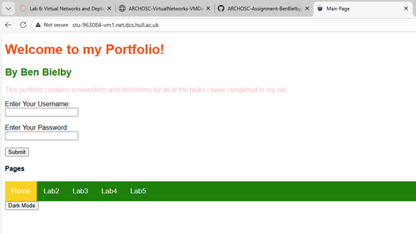

Using ipconfig I was able to find the IP of each VM, and to check if they were able to communicate I used the ping command in the terminal of my vm1 to successfully receive a response from vm2.



Next I used the test-netconnection command on vm1 to check the iis server on vm2 is running correctly and then after did the same on the vm2 server to check the vm1.


I then used github to create a self-hosted runner on my vm1 machine and after setting it up confirmed it worked because it shows that it is listening for jobs.

I made a github workflow and pasted the YAML into it, confirming the functionality as in VM1 the runner found the job and successfully copied my repo across into the wwwroot folder.
The final working webiste can be found here: http://stu-963084-vm1.net.dcs.hull.ac.uk/

